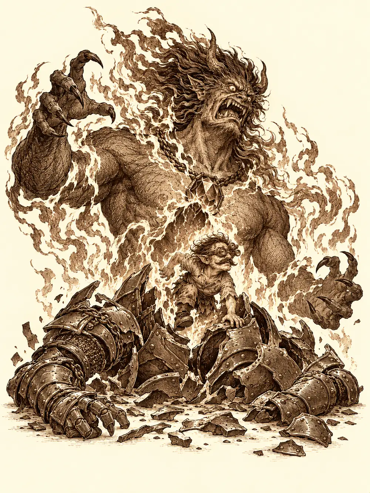

Capítulo 162
Salvar al gnomo
Libro X · Hasta pronto, Kuroto
Danifae había comido, se había lavado y había recuperado sus armas, y ahora cruzaba el patio de la base de los cazadores detrás de Banzo como si nunca hubiera estado encerrada. R3 iba sobre el hombro del goliat, parpadeando en azul. El pacto que los unía no se veía, pero estaba ahí, bajo la piel de ambos, y Banzo se lo había explicado a Calista en pocas palabras: tener a la drow en una celda era inútil, porque desde allí seguía enterándose de todo y recibiendo ayuda. Mejor tenerla a la vista.
Arwen fue la primera en salir a recibirlos. Saltó a la cabeza de Banzo como un cachorro que recibe a su dueño, le tiró de la nariz, de la oreja, le revolvió la cabeza con las dos manos, y de ahí saltó directamente a los brazos de Danifae. La drow la sostuvo y empezó a rascarle la cabeza con una sonrisa que, por una vez, parecía sincera. Channi corría entre las piernas del goliat con las alas abiertas.
"¡Mira, Banzo, pío! ¡Ya estoy más fuerte!", y hacía flexiones con un ala.
Jin miró a la drow sin acercarse.
"Te has ganado tu libertad".
"Me la ha ganado él".
El jaleo sacó de su habitación a Kurobane, que llevaba días encerrado meditando y leyendo el libro de los cultistas. Saludó a Danifae con aquella sonrisa pícara que tenía cuando lo habían conocido, y luego le contó a Banzo que estaba libre. Sacó la vaina de su espada, que antes absorbía la oscuridad y ahora brillaba plateada. Ya no había nada dentro de él que lo empujara a hacer cosas.
"Me arrojaste el collar de los cazadores a los pies", le dijo Banzo. "No sé qué haces en esta mesa".
"Si te incomoda mi presencia, me voy".
"No me incomoda. Quiero saber qué piensas hacer. Como te guías por impulsos, a lo mejor hoy te apetece ser cazador y mañana no".
"El que se guiaba por impulsos era esa cosa que tenía dentro. Ahora estoy más tranquilo".
Su sombra se movió en el suelo, se levantó en forma de copia suya y volvió a tenderse. Banzo le contestó que esperaba que estuviera a la altura de la sombra que ya no tenía, y se volvió hacia el autómata.
R3 proyectó sobre la mesa un mapa de Kuroto hecho de luz. Había zonas rojas, donde ya habían buscado, y zonas naranjas, donde aún no. Que las rojas estuvieran marcadas no significaba que estuvieran vacías. Banzo pensaba en voz alta: la criatura que llevaba el cuerpo de Archi no era Archi, pero los llevaría hasta él.
"¿Queréis mi opinión?", preguntó Danifae. "Es un demonio. Querrá sembrar el caos. ¿Cuál es el lugar más desprotegido de Kuroto?".
Miró el mapa y apoyó un dedo sobre Hakara, al norte, lejos de las tropas del sur. Nadie lo discutió. No era una certeza, solo la mejor apuesta que tenían. Añadió que el demonio la había reconocido en el laboratorio, y que si se había marchado tan deprisa quizá había sido porque había aparecido ella.
"Hasta los demonios te tienen miedo", murmuró Banzo.
Arwen, que no había atendido a nada, había ido llenando la mesa de platos de gusanos y frasquitos de un líquido verdoso, porque los veía a todos muy gruñones y pensó que tendrían hambre. Cuando entendió que iban a pelear, pidió llevar a Shizuka, y Banzo le prometió con el meñique que no se marcharían sin ellas. La promesa la envolvió en un resplandor dorado durante un instante. Luego la niña se convirtió en águila y salió volando a buscarla.
Mientras la esperaban, Jin se llevó a Banzo aparte. El goliat le explicó el acuerdo con Danifae, que él llamó de no agresión y que Jin escuchó sin terminar de creérselo, y los dos decidieron observar a Kurobane durante la misión antes de volver a hablar con él. Al otro lado de la sala, la drow sacó de su bolsa un pergamino y lo dejó caer sobre la mesa delante del ninja, sin explicar qué contenía. Kurobane le dijo que se lo guardara de recuerdo. A él ya no iba a poseerlo nada.
El águila volvió con Shizuka montada en el lomo. Al tocar el suelo volvió a ser niña y le contó a su amiga, inventando la mitad, que iban a darle una tunda a un gnomo que olía a hierro y que habría demonios y explosiones. Shizuka se cuadró.
"Líder de los cazadores, presente".
Cruzaron el portal todos juntos, el goliat con el autómata al hombro y las tres pequeñas criaturas detrás, como un pastor con su rebaño.
Hakara ardía. La parte trasera de la taberna estaba negra, había casas que eran solo vigas humeantes y gente muerta en las calles. Un hombre defendía la puerta del alquimista con un palo. En una casa en llamas, el joyero gritaba por una ventana. Por el aire pasaban demonios con alas, y uno de ellos se acercaba a la capilla.
"Como no nos dividamos, esto va a ir muy mal", dijo alguien.
Danifae fue la primera en moverse. Se sacó de la espalda un látigo de tres colas, cada una con cabeza de serpiente, y lo hizo restallar contra un demonio. Kurobane y Shizuka atacaron detrás. Entonces llegó un grito que no era de ninguna garganta humana, un alarido que les vació la cabeza, y algunos de ellos cayeron al suelo sin sentido. Banzo se abrió paso a golpes para llevar a Arwen hasta el hombre de la puerta, y la niña se transformó en árbol: echó raíces junto a él, levantó un muro de corteza y ramas y lo cubrió mientras el hombre seguía golpeando lo que se acercaba.
Desde algún lugar invisible, el ocupante del cuerpo de Archi lanzaba fuego. Los demonios traían rayos, oscuridad y algo peor: una magia que confundía. Jin se quedó de pie en medio de la calle con la mirada perdida, sin saber hacia dónde golpear. Channi quiso atrapar a los enemigos en una enredadera y se quedó enredada ella misma. Banzo atraía a los demonios hacia sí para quitárselos de encima a los demás, y Arwen mantenía a su alrededor un círculo de luz cálida que curaba a quien pisaba dentro. Pero ni la luz ni las curas despejaban la niebla que se les había metido en la cabeza a algunos.
Kurobane se levantó y derribó a un demonio. Shizuka se convirtió en oso. Channi consiguió soltarse de sus lianas y curó a Danifae. Arwen deshizo la oscuridad que cubría la calle y en ese momento vieron al monje. Estaba solo, demasiado lejos, y un demonio le arrancó la cabeza de un mordisco antes de que nadie llegara. La confusión alcanzó también a Banzo y a Kurobane, y durante unos instantes el líder de los cazadores no supo dónde estaba.
Danifae fue la que encontró al enemigo. Notó dónde estaba el ocupante invisible, aunque se movía todo el tiempo, y sus golpes rompieron la concentración del demonio que tenía a Jin hechizado. Jin parpadeó como quien sale de un sueño. Kurobane lanzó a su copia de sombra contra el lugar donde se sospechaba al gnomo, Banzo seguía sosteniendo el frente y Arwen despertó a Channi de su aturdimiento. El ocupante respondió con una explosión de fuego que les chamuscó la ropa a todos.
Kurobane lo localizó por el oído y lo atacó a ciegas. Channi lanzó sobre él un rayo de luna y siguió curando. Banzo se cargó a Arwen a la espalda y corrió hacia el foco del fuego. La niña buscaba el rastro de la magia y no lo encontraba. Entonces Danifae levantó una mano y el gnomo empezó a brillar con una luz violeta que lo dibujaba en el aire, con su armadura y su bigote, por mucho que quisiera esconderse.
"Ahí está".
Jin pudo por fin atacarlo. Banzo se le echó encima por detrás y lo atrapó en un abrazo de oso. El cuerpo del gnomo ardía, y todos los que estaban cerca ardían con él.
"¿Dónde está el gnomo?", le gruñó Banzo al oído.
La criatura sonrió. Arwen lo curaba a él y a todos los que podía, con la cara llena de hollín.
"¡Abajo el metal, arriba los bosques!".
Jin descargó sobre el cuerpo del gnomo todo lo que antes le había impedido hacer la confusión, golpe tras golpe. Danifae se guardó las armas y se acercó. Levantó la mano a la altura de la cara de Archi y pronunció un nombre.

"Tazgorat".
El gnomo se puso nervioso. "Calla. Calla".
"Tazgorat".
Le brotaba luz de los dedos.
"Tazgorat".
El cuerpo del gnomo se partió como una cáscara. De dentro se alzó un demonio enorme, envuelto en llamas, y al cuello llevaba un collar con una gema roja. De la gema salió, a trompicones, Archi. El de verdad. Pequeño, sucio, mirando a todas partes como si acabara de despertar de una pesadilla demasiado larga.
El demonio no se dio por vencido. Banzo le gritó que se arrodillara ante el líder de los cazadores, que pronto tendría un señor.
"Yo no tengo ningún señor, idiota. Soy un señor abisal".
Siguieron las llamas, el látigo de Danifae, el rayo de luna de Channi, las curas de Arwen, que pasaban de uno a otro como una brisa. Por fin Banzo levantó el arma y lo remató. El demonio estalló. La explosión los alcanzó a todos, a los cazadores y al gnomo recién liberado, y cuando el humo se aclaró el señor abisal ya no estaba.
Arwen tenía el pelo de punta y chamuscado. Archi estaba sentado en el suelo, con los bigotes encendidos como mechas, soplándoselos con cara de no entender nada. Banzo lo miró un rato desde arriba, se agachó, le cogió las dos manos y le cerró unas esposas sobre las muñecas.
"Tú te vienes conmigo a palacio. Vas a hablar con Calista".
"¿Ves?", le dijo Arwen al gnomo. "Esto es lo que pasa cuando juegas con el metal".
Y se fue a curar heridos. Jin dijo que se quedaba a ayudar. Kurobane y Channi echaron a correr hacia las casas en llamas a sacar a quien quedara dentro.
Nadie dijo que se quedaba con Danifae. Cuando miraron, ya no estaba.
No había ido muy lejos. Banzo la alcanzó en las afueras, y como no tenía otra forma de pararla se clavó el arpón en su propia pierna. Danifae se dobló a la vez, con la misma herida, y se volvió apretando los dientes.
"No tengas tanta prisa. Pasemos un poco de tiempo juntos".
"Iba a cumplir con parte del trato. Ese demonio no era vuestro único problema".
Le dijo quién era el demonio: un señor de la vigesimoctava capa del Abismo, al que no creía que le interesaran los planes de Otakemaru. Después señaló al cielo.
"Ni os habéis fijado, ¿verdad? La cúpula. Se rompe".
Banzo miró hacia arriba y apretó los dientes. El final estaba cada vez más cerca. Llevarían al gnomo a palacio, y la drow, sonriendo con amabilidad, dijo que debería ser ella quien informara a la shogun de lo de la cúpula. Las serpientes del látigo se le enroscaron en la cintura.
En palacio entraron arrastrando a un Archi maniatado y amordazado que, por el camino, se había hecho encima sus necesidades. Mei, que los recibió en la sala del trono, miró a la drow con extrañeza: se parecía demasiado al consorte. Calista bajó con Gelbreak cogido de la mano para no tensarse tanto, arrugó la nariz y ordenó que lavaran al gnomo antes de bajarlo a una celda. Allí abajo, Archi andaba a cuatro patas, ladraba, gritaba que venían los demonios y repetía un nombre que nadie entendía. Wilson. Wilson sabía cosas. Calista acabó lanzándole un hechizo que lo dejó en trance, y un hilo de luz le salió del oído al gnomo y le llegó a ella a los dedos. Más tranquilo, con algo de comida delante, Archi empezó a contar a trozos: una voz le había prometido devolverle la gloria en Conosur, él había construido una máquina, había engañado a sus amigos. El demonio se le había aparecido en su taller escondido, y las voces venían de antes, del viaje a Puerto de las Espadas, de una piedra robada, de un rayo. Cada recuerdo le provocaba otra crisis.
Danifae sacó entonces una filacteria roja. Seducía a quien la llevaba, dijo, y ahora estaba vacía. Calista se la quitó de las manos para destruirla lejos del gnomo. Decidieron dejarlo en observación unos días. Antes de marcharse, la drow añadió que los cultistas habían hablado con los Guardianes. Calista encargó a Banzo que acabara con la base cultista que quedaba. Él propuso montar otro grupo, con ayuda de Danifae si hacía falta, y la shogun aceptó con una frialdad que no le había conocido nunca.
Cuando el goliat y la drow se fueron, Gelbreak abrazó a Calista y le pidió que no se dejara provocar. Ella le contestó que ya no pensaba esconder sus advertencias ni confiar en Banzo. Acudir a su enemiga en vez de a ella era una traición. Gelbreak intentó matizarlo: veía al goliat desesperado, apagado, perdido como líder mientras los cazadores se le deshacían entre las manos, pero no traidor.
"Prefiero luchar sola antes que aliarme con una araña".
Él no insistió. Se abrazaron y subieron a informar al consejo.
A la mañana siguiente, Archi se despertó empapado en sudor, con olor a azufre en la nariz y un sabor a metal en la boca, y empezó a gritar llamando a los guardias. Quería a Hayate. O a Sirth. Un guardia le contestó que se callara, que la última vez lo había dejado todo perdido entre los barrotes, y en ese momento las pisadas pesadas del clérigo resonaron en el pasillo con un permiso firmado en la mano.
Sirth le lanzó una protección que no lo curaba, pero le despejaba la cabeza durante un rato. El gnomo preguntó en voz baja si había hecho algo terrible.
"Eso me han dicho".
Los ojos del clérigo se encendieron de un blanco amarillento para ver lo que no se ve. El demonio había caído en Hakara, le explicó, pero esos seres a veces dejaban restos de su esencia. Archi se desnudó entero, sin que nadie se lo pidiera, para enseñarle una mancha roja en el antebrazo. Sirth pasó un dedo por encima y se lo llevó a la boca.
"Salsa de tomate".
Luego le sujetó la barbilla y le miró los ojos. Había en ellos unas marcas amarillentas. Fiebre abisal, dijo. Grave, pero curable. Él no tenía las artes necesarias; quizá Hayate, o las niñas del bosque. Mientras lo pensaba, una araña con un mechón rojo se coló en la celda a comerse los restos de macarrones del plato. Sirth la recogió con la mano.
"¿No es así, pequeña escurridiza?".
Arwen no quería curar al gnomo. Propuso quemarlo. Sirth le recordó que era un compañero y que los cazadores se ayudaban entre ellos, y le prometió hamburguesas en la taberna de Ushi. Dos, exigió la niña. Volvió a su forma, se acercó a Archi con las manos encendidas de dorado y lo tocó.
Unos días después, Kurobane leía un cartel pegado a una pared de Sho que anunciaba un nuevo torneo de cazadores, cuando dos figuras encapuchadas se detuvieron a su lado. Una de ellas era Calista. La otra, Gelbreak. El ninja les contó que había ayudado a defender Hakara, admitió que se había equivocado con Banzo y con sus compañeros y dijo que ya no llevaba la sombra dentro. Gelbreak le exigió hechos. Que hablara con el líder. Que dejara de huir de sus errores, porque el pasado no se queda en el pasado.
Calista sacó entonces un collar de cazador nuevo y se lo puso en la mano. Lo readmitía a prueba, con todos los derechos, incluido el de competir en el torneo. Kurobane le dio las gracias, prometió hablar con Banzo y se fundió con las sombras.
Gelbreak esperó a que se fuera para protestar: Calista acababa de desacreditar delante del chico la lección que él intentaba darle. Ella le recordó que él había apoyado a Banzo cuando se había saltado su orden de mantener encerrada a Danifae y que había ocultado el trato. El drow lo admitió, pero defendió que su hermana era la única solución rápida para salvar Hakara del demonio. Calista temía las consecuencias: ahora no podía levantar un dedo contra Danifae sin poner en peligro la vida de Banzo. Discutieron por las filacterias, por la responsabilidad, por si cada uno valoraba de verdad lo que el otro sabía hacer. Ninguno convenció al otro. Calista se marchó a palacio sintiéndose subestimada. Gelbreak se quedó en la calle, sacó el collar de perla negra que ella le había regalado, lo apretó en el puño y echó a andar en dirección contraria.